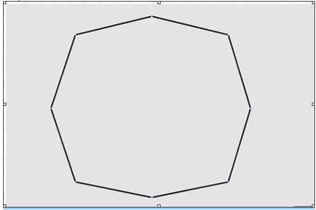

Сгладьте углы получившегося прямоугольника:
- На панели инструментов нажмите на иконку и дважды кликните на любую из точек фигуры.
- Зажмите любой из краёв появившихся линий — их называют усами. Тяните ус в сторону изгиба угла, чтобы
он не пересекал линию дуги.
Иначе ваша линия может получиться «мятой».
